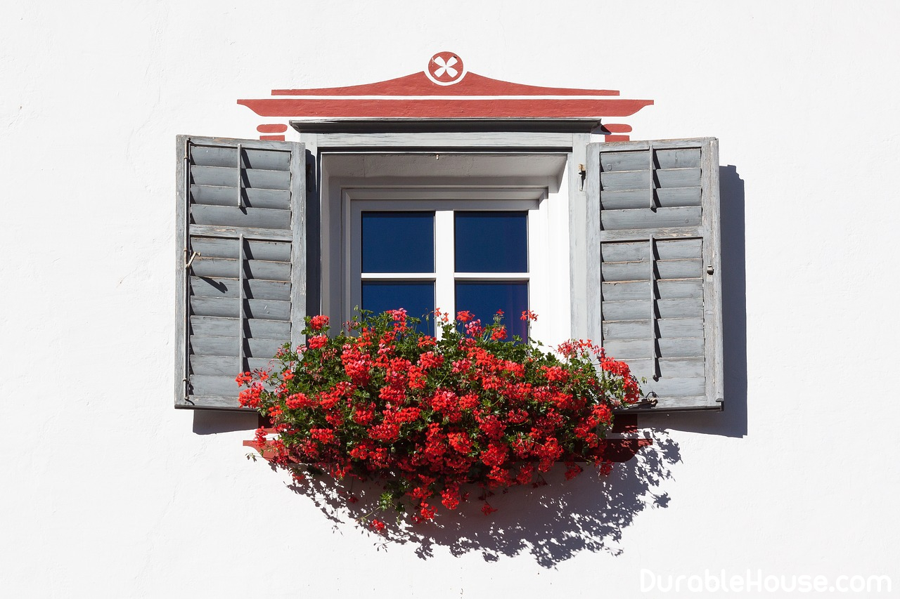

How to choose the best windows
Despite the fact that the window looks simple and, it would seem, does not conceal in itself any Surprises, it is necessary to understand a little of its device at least so that when buying Make the right choice.
Window components
The modern window consists of several important components: a profile, a double-glazed window and accessories. The profile ensures the rigidity of the window structure. It is made by extrusion. The essence of it is that through a hole of a certain size, the softened 80-120 ° C material. At first glance, everything is simple, the operator keeps track of the temperature and looks, So that the profile does not bend to the side. So why are the profiles of some manufacturers standing (and indeed Valued) higher than others? In addition, if you look closely, the profiles of different brands are different By color.
It's all about raw materials and recipes. Ingredients and their proportions are a mystery with seven seals, Leading manufacturers polished and honed it for years, bringing to perfection. Exactly Therefore, experts advise first of all to pay attention to the producers who Are present on the market for at least 10 years.
The main criterion is the camera
After determining with the manufacturer, proceed to a thorough study of the range Presented to them products. And the main criterion here is the number of cameras. For our country Enough 3-chamber profile: the main camera, drainage chamber and camera for Fastening fittings. Even in the current severe winter, they are quite Cope.
The main camera serves to install the reinforcement insert, it is also called reinforcing Profile, drainage is designed to drain water outward through the seal at Heavy rain and wind.
There are also 5-chamber profiles, but they are used in those regions of our planet, where the norm Are very low average monthly temperatures (-25 ° and below). For us, and -20 ° C anomaly. The outer walls of the profile must be at least 2.8-3 mm.
Now a few words about color. All profiles are available in four shades: snow-white, Milk, brown and gray, but with the help of lamination they can be turned into any other colors. But keep in mind that at the same time the price will increase, and significantly.
How to choose a double-glazed window
Windows - these are the same enclosing structures as the walls, only they are not made of wood or Stone, and 80% of glass and 20% of plastic (we are talking about windows with a plastic profile). At the same time, the heat-saving functions are not removed from it. Given this proportion - 80:20, It is easy to assume that the main load for the preservation of heat lies not on the profile, but on the Insulating glass, therefore it is necessary to approach its choice with special care.
A single-chamber double-glazed window consists of two glasses connected together with the help of Mastics. Such a double-glazed unit is not intended for use in residential heated Premises. It is used for glazing of balconies, loggias, unheated greenhouses, Industrial premises.
But its modification - single-chamber glass with energy-saving glass - already has The right to move into a house. This option is used when the task is Glazed large openings without cutting their profile, to facilitate the construction.
Energy-saving glass
Currently, there are two types of energy-saving glasses: i-glass and k-glass.
K-glass is manufactured by applying silver and indium salt at the time the glass is in Liquid state, then both layers are fired, forming a single whole. I-glass is superficial Is first coated with silver ions, then with titanium oxide. Visually distinguish these two glasses It is almost impossible for each other. As for consumer qualities, i-glass Has higher thermal insulation properties. It is for this reason that the k-glass is already Almost not released.
With all its undoubted merits, i-glass has one drawback, which, however, More relates to processors than consumers. The fact is that the glass unit with Manufacture is glued along the perimeter to the frame with a sealant. Spray on i-glass Does not allow it to be sealed. To achieve the required quality, the manufacturer, Using special machines, removes the edge from the glass and obtains the necessary adhesion. TO The same i-glass can not be stored for a long time in a warehouse, it should be as soon as possible Turn into a product, the side with a coating is always turned inside the glass unit, Thanks to which the silver ions do not oxidize, remaining intact during the whole period of operation. Given all these facts, not every processor is able to produce such a double-glazed window. Small enterprises that do not have the appropriate equipment, order them from larger Manufacturers.
Double-glazed windows are three glasses, hermetically connected to each other. Such double-glazed windows are most popular with the consumer. There is no resonance Oscillations of glasses. The freezing point is -24 ° C. Different size of air chambers (glass 4 Mm - gap 12 mm - glass 4 mm - gap 8 mm - glass 4 mm) improves sound-proof and Heat-shielding functions.
To enhance the sound insulation characteristics of the double-glazed windows in living quarters located In noisy areas, it is recommended to install a double-glazed unit with a glass on the outside Thickness 6 or 5 mm. The price for such a double-glazed window increases by 10-12%.
If you decide to glaze a large opening, which means installing the glass as high as possible Size (loggia, winter garden, bay windows), it is better to use double-glazed windows with Energy-saving glass. Thus, you increase the resistance by about 30% Heat transfer of this translucent structure, and your house will not only be light, but also Warm.
Argon and Krypton
To fill the interglass space in double-glazed windows, except for air, use Inert gases or mixtures of gases, which significantly improves the heat and sound insulation properties Double glazing. When the interglass space of a double-glazed window is filled with a more dense Compared with air gas, heat loss due to convection and heat transfer Inside the insulating glass unit, decrease. Thermal conductivity, density, dynamic viscosity and The intrinsic heat capacity of gases affect the thermal conductivity of the interglass Space. Most often, argon is used to fill the interstitial space and krypton. These gases are obtained by separation from the liquefied atmospheric air. Krypton Is less frequent and is much more expensive than argon, but it is more likely to increase Insulating ability of a double-glazed window.
Do not forget that if there is a non-compliance with the technology of manufacturing a double-glazed window, there is a risk Volatilization of the gas and, consequently, reduction of the heat-saving characteristics of the window.
What is triplex?
If you want to make your window not only beautiful and heat-efficient, but also safe, We recommend installing triplex glass (two glasses glued together with a layer of polymer material): When broken, such a glass does not scatter to fragments.
Being a laminated product, triplex has more flexibility than ordinary glasses of the same Thickness (thickness of glass triplex of 6 mm).
In addition, glass triplex has increased sound insulation properties. When installing It in a single-chamber double-glazed soundproofing of a double-glazed window, and consequently, and soundproofing The entire window is improved by 4 dB, which is comparable to the soundproofing of a two-chamber Double glazing.
Ordering a window
How many there is a window market, there are so many problems of substandard products and Poor-quality installation. Unfortunately, it is the marriage that occurs during the installation, Brings the biggest percentage of complaints. Therefore, before deciding to order a window in the Or another company, specify how far its warranty obligations extend. More often It's all about the product, and the company does not take responsibility for the installation. AND It is not surprising: subcontractors are engaged in this type of work, some of them are large Professionals, others - just want more money to earn. If the manufacturer is ready Vouch for their work and gives it a guarantee - you have a chance in case of problems Free to fix them.
In addition to warranties, the company must provide you with certificates confirming that their products Quality and suitable for installation in living quarters.
Windows fittings
Window fittings - this is a fairly rich world of components: seals, corner joints, Angle with roller for mosquito netting, felt, rubber cords, latches, mounting kits - in In general, all the details that will be required for mounting profiles. At the time of ordering the windows you can To suggest different manufacturers, making a choice, it should be clarified how much the fittings Durable, able to withstand daily loads, if necessary, then Protect from hacking.
Thanks to modern hardware, the windows can be opened both inward and outward, Half, entirely, even from left to right and vice versa, and also from top to bottom. And all this thanks to The complicated locking mechanism, which includes more than a hundred parts. Basically The hardware structure is implemented on the basis of a modular principle consisting of a group Mechanisms that transmit motion through an angle.
A special gadget, which is worth paying attention to, is the version of the "children's" castle. The Essence It is to prevent the child from opening the window by himself, for This manufacturers have on the handle a tiny key. Small lock 5 cm long Is mounted horizontally from below the plastic PVC window. You can close the window on the key and, going out From the room, do not worry that the child unwittingly opens it. Everything is done nicely and Aesthetically, and if you take into account that the life of the child is at stake, the significance of such a device Repeatedly increases.
Another important thing is special insertion into the profile, which provides a mode Aeration. If your house has problems with air ventilation (absent Forced supply and exhaust system), then this will help to establish air exchange.